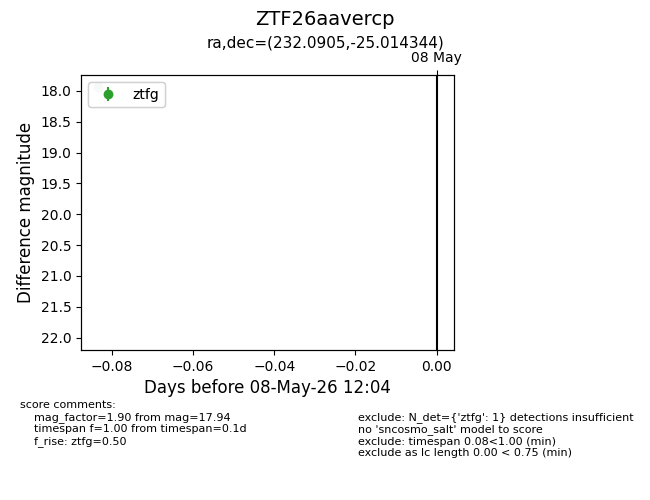
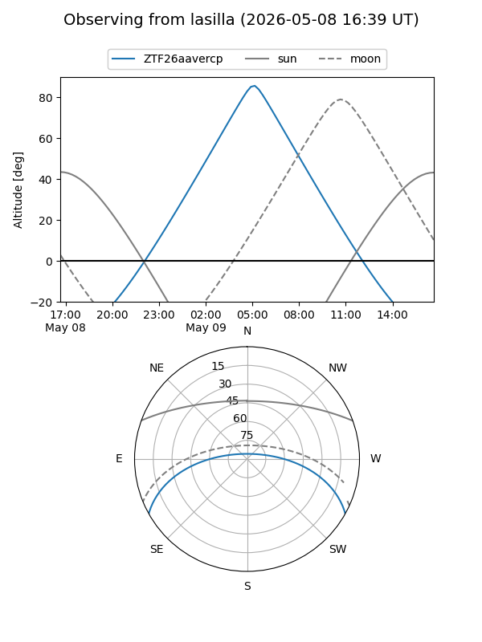
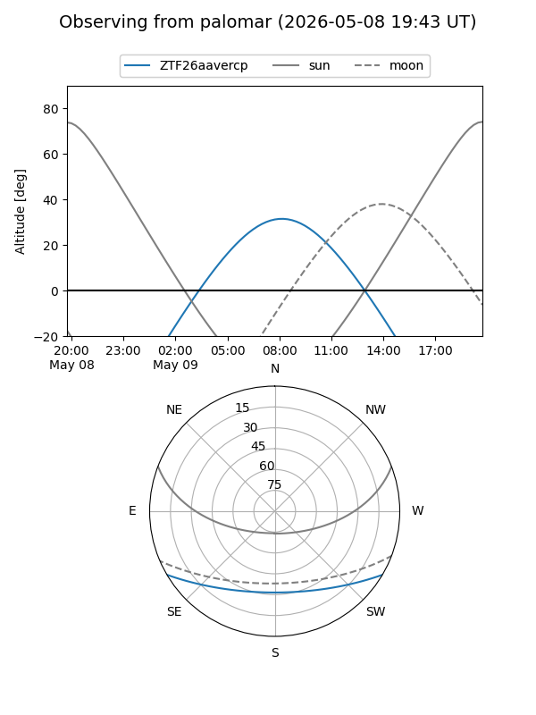

ZTF26aavercp
Target ZTF26aavercp at 2026-05-08 12:06
Aliases and brokers:
FINK: link
Lasair: link
ALeRCE: link
alt names
ZTF26aavercp (ztf,fink_ztf)
Coordinates:
equatorial (ra, dec) = 232.0905,-25.01434
equatorial (HMS+DMS) = 15:28:21.72,-25:00:51.64
galactic (l, b) = (342.3856,+25.58903)
Flags:
Photometry:
last ztfg=17.94
1 ztfg detections
Lightcurve

Visibility


Additional plots